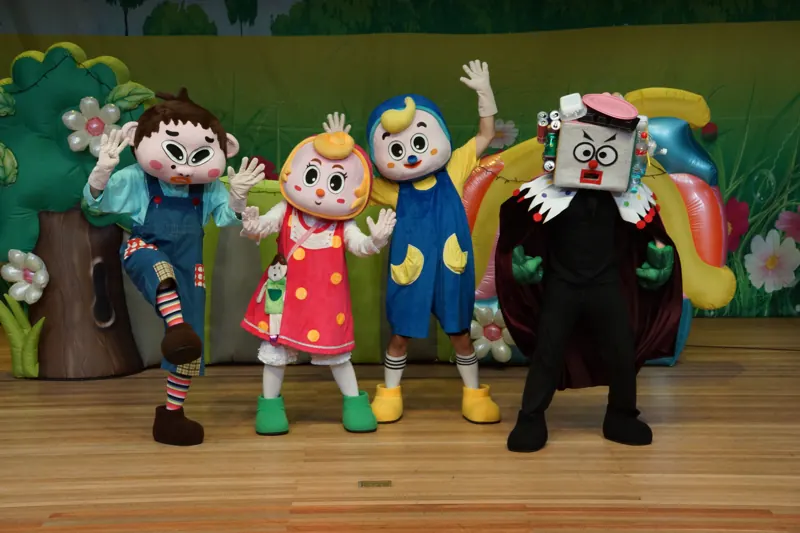
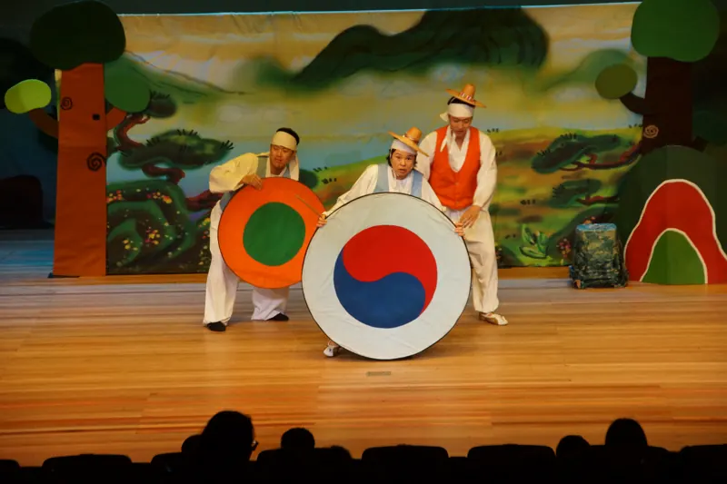
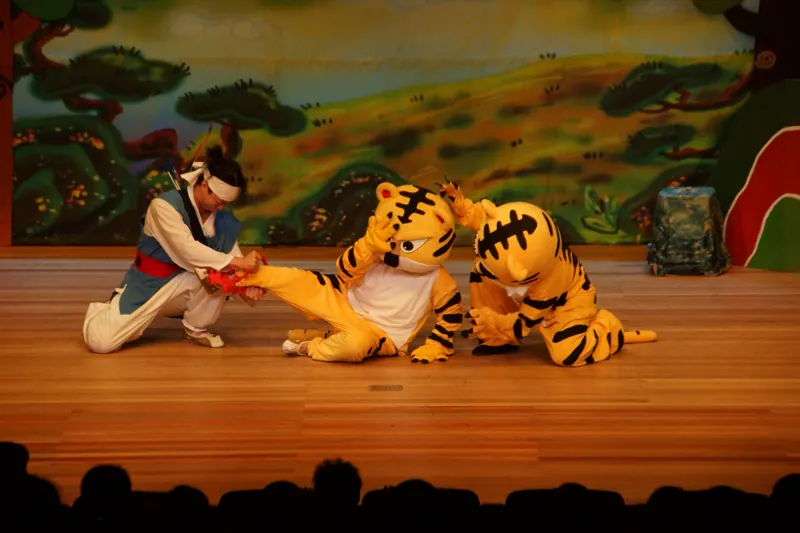
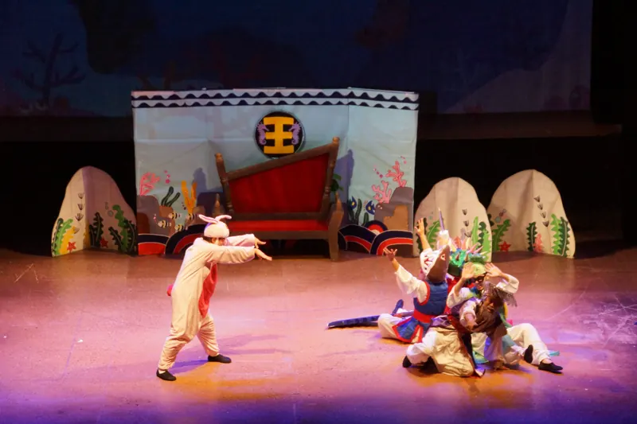
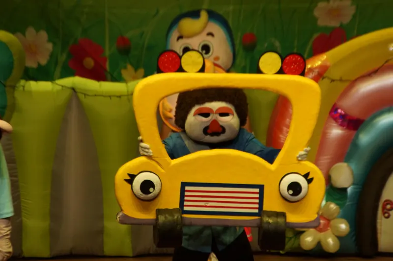
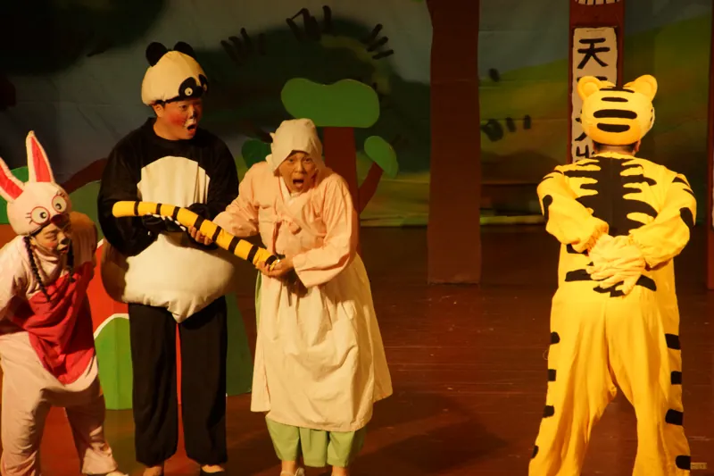
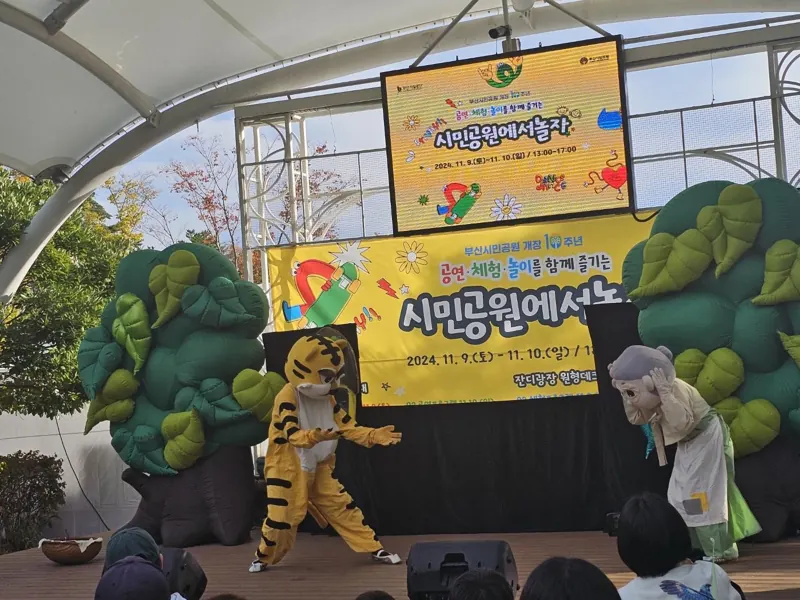

- 직장어린이집 정기공연
- 학교 초청공연
- 부산 아동극
- 유치원·어린이집 인형극
- 도서관·복지관 공연
- 지역 축제 무대
- 성폭력 예방 인형극
- 안전 교육극
- 부산·경남 어디든
어떤 곳에 공연하러 가나요?
부산·경남의 기업·기관 직장어린이집, 유치원과 어린이집, 학교 초청공연, 도서관·복지관과 지역 축제까지 찾아가 부산 아동극과 인형극을 공연합니다. 무대가 없어도 아이들이 모여 앉을 수 있는 곳이면 됩니다.

- 2009년부터
- 어린이 예방극 공연
- 2018년부터
- 부산광역시교육청 학교 순회공연
- 작품 8편
- 전래동화·창작극·교육극
- 40분 안팎
- 작품별 공연 시간

아동극단 징검다리는어떤 곳인가요?
아동극단 징검다리는 부산 기장군 기장읍에 있는 아동극단입니다(대표 백정임). 온 가족이 함께 보는 아동극과 인형극으로 어린이에게는 꿈과 희망을, 어른에게는 동심을 선물합니다. 2009년부터 어린이 예방극을 공연했고, 2018년부터 부산광역시교육청의 학교로 찾아가는 공연에 참여하고 있습니다.
- 객석의 어린이가 이야기에 직접 참여하는 관객 참여형 무대
- 바른 언어생활과 정서 함양을 돕는, 교육과 재미가 함께하는 연극
- 안전, 소방, 질병 예방, 건강한 음식, 성폭력 예방, 과학을 연극으로 풀어낸 교육연극
- 순수 창작극, 세계 명작, 전래동화, 지역 이야기를 담은 스토리텔링
공연 작품
작품을 누르면 줄거리와 공연 사진을 볼 수 있어요.
심술꾼 로보와 꿀꿀이 삼총사
늘 함께하는 꿀꿀이 삼형제와 변장의 달인, 늑대 로보의 한판 대결

은혜갚은 호랑이
새끼 호랑이를 구해 준 젊은이에게 찾아온 호랑이의 보은 이야기

용궁으로 간 토끼
별주부전을 새롭게 꾸민, 꾀 많은 토끼의 용궁 탈출기

삐뚤빼뚤의 안전일기
말썽꾸러기 삐뚤빼뚤의 좌충우돌 소풍날, 생활 안전 이야기

꼬리뽑힌 호랑이
숲속 친구들을 괴롭히는 호랑이에 맞서 떡장수 할머니와 동물들이 힘을 모아요
팥죽할멈
부지런한 할머니와 지게·멍석·알밤 친구들, 그리고 배고픈 호랑이
배탈난 호랑이
자랑쟁이 호랑이가 거짓말하고 쓰레기를 함부로 버리는 버릇을 고치는 이야기
안돼요 안돼!
성폭력 예방 인형극
싫은 건 싫다고 말해요. 친구들과 함께 위기를 이겨 내는 예방 인형극
공연 일정 · 문의
비어 있는 날을 눌러공연을 문의하세요
달력에서 초록색 날짜를 누르고 기관 정보와 몇 가지 질문에 답하면 문의가 바로 극단에 전달됩니다.
달력을 불러오는 중이에요.
찾아가는 공연
아이들이 모일 수 있다면어디든 찾아갑니다
- 날짜 고르고 문의홈페이지 달력에서 빈 날을 누르거나 전화·문자로 알려 주세요.
- 작품과 일정 상담관람 연령과 교육 주제에 맞는 작품을 함께 고릅니다.
- 공연 장소 확인유희실, 강당, 야외 등 공연할 공간을 함께 확인합니다.
- 공연 당일약속한 날, 준비된 무대에서 아이들과 만납니다.

교육청·지자체 문화예술 사업으로도 공연해 왔습니다. 기관 예산 사업이나 행사 일정에 맞춘 공연도 상담해 드립니다.
걸어온 길
- 2009 - 2014
기아대책 부산지부와 함께 성폭력·약물 오남용 예방극과 안전 교육극 공연
- 2014
과학 소재 연극 '우당탕 과학탐험대' 부산 남부교육지원청 꿈키움네트워크 공연
- 2016
문화가 있는 날 '동동동 문화놀이터' 순회공연
- 2016
북부교육지원청 지역연계 문화예술사업 초·중학교 순회공연
- 2018 - 현재
부산광역시교육청 학교 순회공연(예술플러스·공연드림)
공연 사진
사진을 누르면 크게 볼 수 있어요.
자주 묻는 질문
아동극단 징검다리는 어떤 극단인가요?
부산광역시 기장군에 있는 아동극단입니다(대표 백정임). 온 가족이 함께 보는 아동극과 인형극을 만들며, 2009년부터 어린이 예방극을, 2018년부터 부산광역시교육청 학교로 찾아가는 공연을 해 왔습니다.
직장어린이집 정기공연도 하나요?
네. 부산·경남의 기업·공공기관 직장어린이집에 매달·분기·학기 단위로 찾아가는 정기공연을 상담합니다. 연간 계획에 맞춰 작품과 교육 주제를 바꿔 가며 공연합니다.
학교 초청공연도 하나요?
네. 부산·경남 초등학교 강당과 체육관으로 찾아가 학년과 교육 주제에 맞는 교육연극을 공연합니다. 2018년부터 부산광역시교육청 학교 순회공연에 참여해 왔고, 학교 예산이나 교육청·지자체 지원 사업 공연도 상담합니다.
공연 문의는 어떻게 하나요?
홈페이지 공연 일정 달력에서 비어 있는 날짜를 눌러 문의하거나, 010-3837-8479로 전화·문자 주세요.
공연비는 어떻게 정해지나요?
공연 횟수, 관람 인원, 장소, 작품에 따라 달라집니다. 문의해 주시면 견적을 안내해 드립니다.
어느 지역까지 찾아오나요?
부산 16개 구·군과 양산·김해·창원 등 경남 지역으로 찾아갑니다. 그 밖의 지역은 상담 후 안내합니다.
공연 소식 받아보기
전화 · 문자 문의
공연이 필요하시면
편하게 연락 주세요
010-3837-8479
- 상호
- 아동극단 징검다리
- 대표
- 백정임
- 주소
- 부산광역시 기장군 기장읍 차성로418번길 11
- 공연 지역
- 부산 16개 구·군, 양산·김해·창원 등 경남